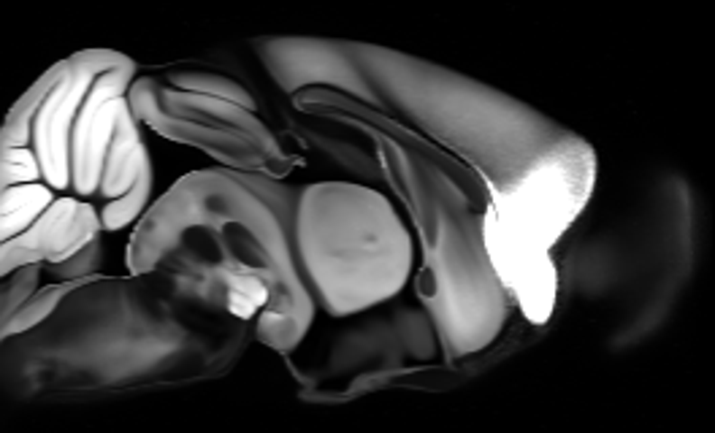

Two references. Different ways to explore the brain.
Explore the human cortex, regional RNA evidence and the proteins encoded by the gene library.

Explore labeled mouse-brain anatomy, annotated slices and a six-gene adult RNA demo.
Each atlas keeps its own anatomy, coordinates and evidence. The mouse atlas includes a six-gene adult RNA demo with Allen source-region evidence.
Click a region on the 3D brain or a slice to see its Allen atlas name.
Loading Allen region labels…
Region surfaces derived from the official annotation at 50 µm. Use slices or region search to explore internal structures.
This educational prototype combines real BigBrain cortical anatomy, mapped DKT atlas labels, and your team's 20 protein structures. It links human gene-level RNA measurements to corresponding anatomical names and shows overlapping network categories from Arnett et al. (2021), Table 1. It does not model developmental changes, diagnose conditions, or simulate biological activity.
The cortex and the expression studies use different specimens. Named, related and broader matches are labeled; there is no pointwise registration or separate left/right expression measurement. RNA detection does not establish protein abundance or an exclusive location. Molecular views use independent coordinate systems and scales. The cell and nucleus are schematic transition illustrations, not reconstructions from the brain specimen.
AlphaFold models are colored by local prediction confidence: blue ≥90, cyan 70–90, amber 50–70, coral <50. Very low-confidence coordinates should not be interpreted as established shapes. The model can contain flexible or disordered regions.
WebXR supports compatible headsets and secure browsers. In VR, point a controller and pull the trigger to select a region; select it again to enter the protein view. Floating buttons return to the brain or cycle proteins. Squeeze a controller to resize the model. Physical headset validation is still required.
BigBrain-derived assets are provided for noncommercial use under CC BY-NC-SA 4.0. See the source panel for references.
Read the expression methods, source articles, pathway qualifications and complete anatomical crosswalk.